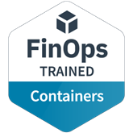

FinOps for Containers
FinOps Foundation
Training
FinOps & cloud cost
Overview
FinOps for Containers recognizes learning focused on applying FinOps to shared container and Kubernetes environments. The Linux Foundation describes learners as able to communicate container costs with non-engineers, find wasted spend, set up cost observability, and address idle and shared resources. Its public badge also lists broad FinOps skills, while the course-specific outcomes center on visibility, attribution, and cost optimization for container workloads.
identify sources of wasted cost in container environments
Syllabus & skills
- Communicating container costs with non-engineers
- Identifying wasted cost in container environments
- Cost observability and attribution
- Idle resource handling
- Shared cost allocation and showback
Issuer documentation
FinOps for Containers
The Linux Foundation, listed on Credly
See Source